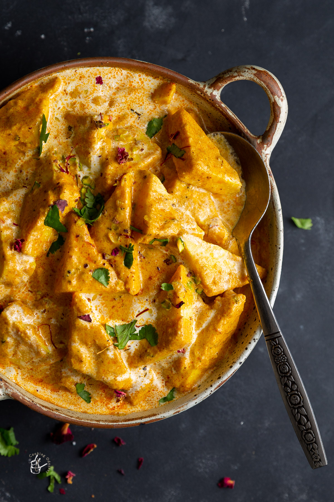

Shahi Paneer
30 mins
Indian | Vegetarian
A rich and creamy paneer dish with a blend of aromatic spices.
Serves 4-6 people
Ingredients
- 1 pack of paneer cubed
- 1 red onion, diced
- 4-6 tomatoes, big dices
- 2 spoons Punjabi gravy masala
- 1 spoon of Red chili powder
- 3/4 spoon of spicyy red chili powder
- 1/2 spoon of sugar
- 1/3 of 35% cooking cream
- Oil
- Salt to taste
- Handful of dried kasoori methi
- Splash of orange food coloring
Instructions
- Dice one small red onion
- Add some oil in the pot
- Add diced onions in the oil
- Cut 4 - 6 tomatoes (big dices)
- Once onions are slightly cooked, add the tomatoes
- Dice 3/4 pack of paneer (4-6 people)
- Once tomatoes and onions are cooked blend them
- To a pot add 2 ½ spoon of oil
- In a small plate add 2 spoons of Punjabi gravy masala, 1 spoon red chili powder(color), ¾ spoon spicy red chili powder
- Add all masala in the oil and mix
- Add blended gravy in the pot
- Add some salt, half spoon of sugar and handful of dried kasoori methi
- Turn the stove to medium low
- Wait for the oil to come on the side and tomato tangy taste is gone
- Add 1/3 of 35% cooking cream
- Add a splash of orange food coloring
- In a separate pan add a spoon of oil and slightly fry the paneer
- Add the paneer in the sauce
- Wait for the oil to come on the side